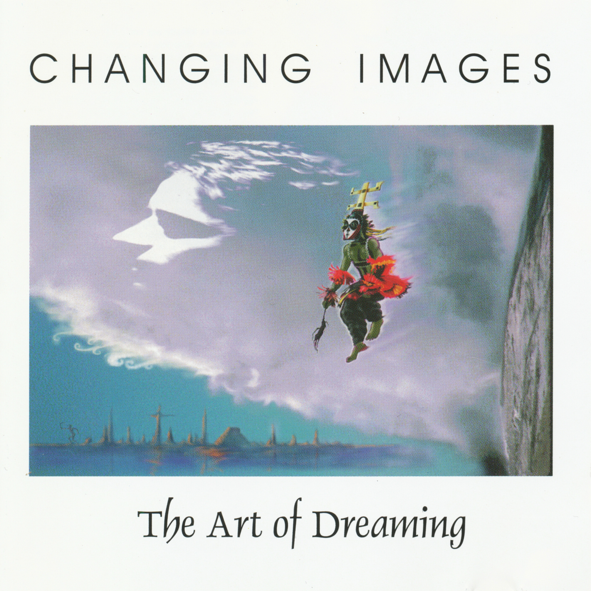
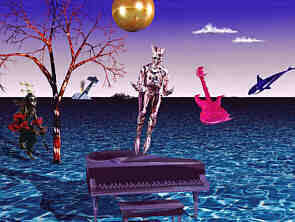
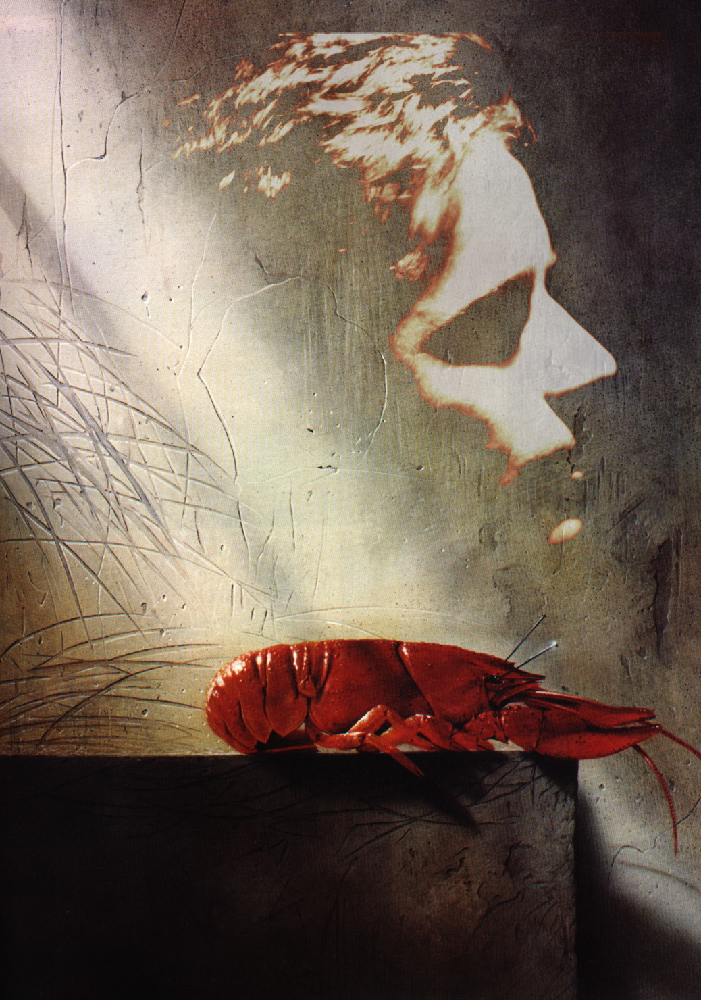

CD Album · 1997 · CI003
The Art of Dreaming
A dream is a gate to different worlds — and music can follow it through.
Available on all major streaming platforms.
The concept
Dreaming as a creative act.
The album interprets dreams as changing impressions, landscapes and emotional states. From falling asleep and lucid dreaming to altered states of consciousness and awakening, each piece opens another door. In the tradition of the duo, electronic structures meet ethnic colour, ambient sound and cinematic movement.


Listen to “The Dreaming” (excerpt)
The tracks
- The Dreaming 14:41
- Somnambul 11:40
- Sedated 9:33
- Illuminescent 12:45
- Sub Conscious 8:18
- Awakening 8:56